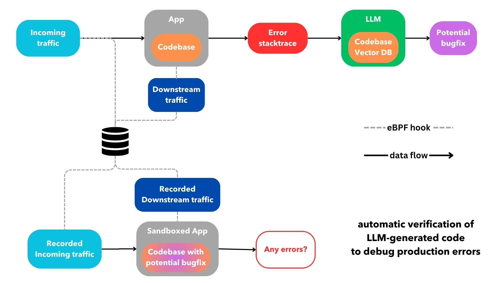

2024-03-01
LLMs are thus far the fastest adopted technology in history after OpenAI reported that ChatGPT achieved 100 million users within 2 months of its release. Chief among the uses cases for LLMs is code generation. Today, we mostly generate code with LLMs using chat-like interfaces within a terminal, website, or code editor. However as impressive as LLMs are at coding today, any developer that has used LLMs for code generation knows that even with the right context the vast majority of the time LLMs don't generate code that works as-is. Instead the generated code either needs to be throughly massaged, or it serves as inspiration for the code we ultimately end up writing. In some cases, the LLM-generated code seems to come close to the desired solution and we verify it by perusing it and/or manually running it within our codebases. However, this rarely works. One Princeton study that tasked two different LLMs to solve 2,294 real GitHub issues found that Claude 2 and GPT-4 solved only 4.8% and 1.7% of the issues respectively.
I'm particularly interested in automating the verification of the LLM code generated for debugging application errors because debugging has a binary outcome that is always verifiable- did the error go away and did any new errors arise? If we are able to programmatically verify if an LLM can debug and solve for an application error it doesn't matter if the LLM-generated code fails to resolve the error the majority of the time, we can run this workflow over and over again as software far from a chat interface.
Automatically debugging exceptions within a containerized production application is possible with an opinionated cloud infrastructure and error monitoring setup that collects the necessary data to verify bugfixes and behind the scenes tasks an LLM to generate a bugfix for each of the recorded production errors. A pull request to the application's codebase is submitted if and only if a bugfix verifiably fixes a given error. Pull requests ideally run with unit tests that ensure there are no breaking changes or regressions. Finally, one of the maintainers can take a closer look at the LLM's proposal for a verified bugfix to a particular error and decide to discard it, further edit it or merge it.
In order for the cloud infrastructure hosting the production application in question to verify the LLM-generated bugfixes, the platform needs to be able to parse and collect incoming requests and outgoing network traffic using eBPF (more on that later). The infrastructure offering can then create branches out of the main git branch of the application's codebase with potential bugfixes and deploy them to sandboxed development environments behind the scenes. Finally, the cloud offering replays the incoming requests for the sandboxed environments while simultaneously mocking the outgoing network traffic using previously recorded values from the time the error took place. If no error is thrown, the cloud offering opens a pull request for the maintainers to review. This is a rough sketch of what I am describing:
A cloud infrastructure platform that is able to generate and verify LLM bugfixes while also providing the best UX requires two important features:
1. git-based deployment process for containerized apps
A git-centered deployment experience allows us to deploy by pushing a git branch to a remote repository without having to configure a CI/CD system.
This workflow has been around since 2009 thanks to Heroku, the grandfather of all PaaS. This DevOps abstraction tucks away a fair amount of
complexity by making some assumptions about our app. For most cases, it really should be
as simple as some form of pushing to a branch with a Dockerfile or docker-compose.yml in it (or nothing in particular if using Nixpacks)
without having to deal with the fairly standard DevOps process of:
DockerfileI do wish more container cloud offerings today where as easy to use as the git-based, webapp offerings of Netlify or Vercel. Fly.io is one good example of a provider with a seamless, git-based deployment process for containerized apps. Cloud infrastructure that abstracts away the repetitive parts of the deployment process not only has superior UX, but it can easily provide features that can save us a lot of development time like preview deployments. Most importantly, a git-based deployment process also makes it possible to programmatically replicate deployments behind the scenes. This is imperative to be able to propose verifiable bugfixes as we can test if an LLM can generate code that fixes a given bug, and do that repeatedly for all bugs, without an overly complicated CI/CD workflow, or some sort of spaghetti of yaml.
2. replay of incoming traffic and mocking of outgoing traffic via eBPF-based, SDK-less error monitoring
Error monitoring tools are used primordialy to triage applicaiton errors. However, some offerings can also collect networking traffic to later replicate production conditions in sandboxed staging environments to improve reliability of upcoming software releases. Most error monitoring tools offer SDKs to explicitly instrument errors and networking calls within an app which can be tedious. However, some providers like DataDog have SDK-less error monitoring offerings built on eBPF.
eBPF is a Linux technology that
can run sandboxed programs in the kernel without changing kernel source. This technology opens the door for powerful error
monitoring tools by hooking directly into kernel OS calls without any additional syntax required
within a containerized codebase. However, fully SDK-less error monitoring via eBPF programs requires privileged, or
sudo, access to hook into the kernel to then span the containerized app as a child process. This
can be a complicated setup as most containerized deployment systems provide a sandboxed, or unprivileged,
environment to run apps on.
As such, SDK-less error monitoring is less common and typically reserved for business critical high performance needs.
However, an SDK-less setup provides both a better UX, and the ability
to replay incoming traffic and mock outgoing traffic behind the
scenes which is necessary to verify the
LLM's proposed bugfixes programmatically. Mocking all outgoing network traffic is particulally tricky as any communication to downstream databases and services needs to be properly parsed, recorded and stubbed which would not be possible without eBPF hooks.
Certain devtools within domains where the functionality of LLM-generated code can be verified have been on the rise as they can save developers countless of hours. This trend will continue as the price of invoking LLMs goes down and the generative coding abilities of LLMs improve. Figma to code plugins are now abundant and significantly better than only a couple of years ago thanks to the newer generative AI models that can understand design assets and use them to verify the correctness of LLM-generated frontend code. Similarly, we can verify code generated by an LLM that was tasked to fix application errors because the expected output is simply that the error goes away and no new errors arise.
Drop me a line at lfdepombo at gmail dot com if you want to learn more about a cloud infrastructure offering I have been working on that proposes verifiable bugfixes. I would also love to hear your thoughts on any type of programmatic verification for LLM-generated code, or on building abstractions with LLMs without directly exposing a chat, or visual, interface to end-users.